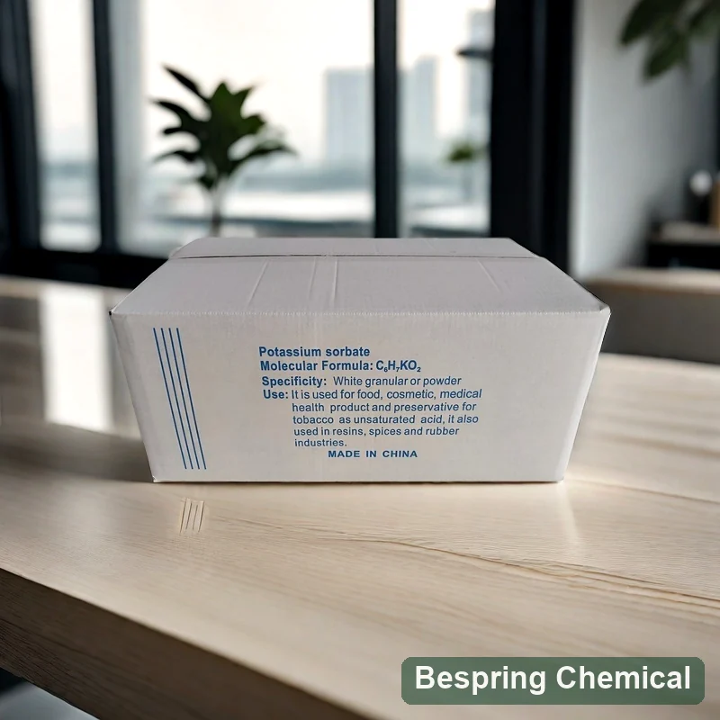
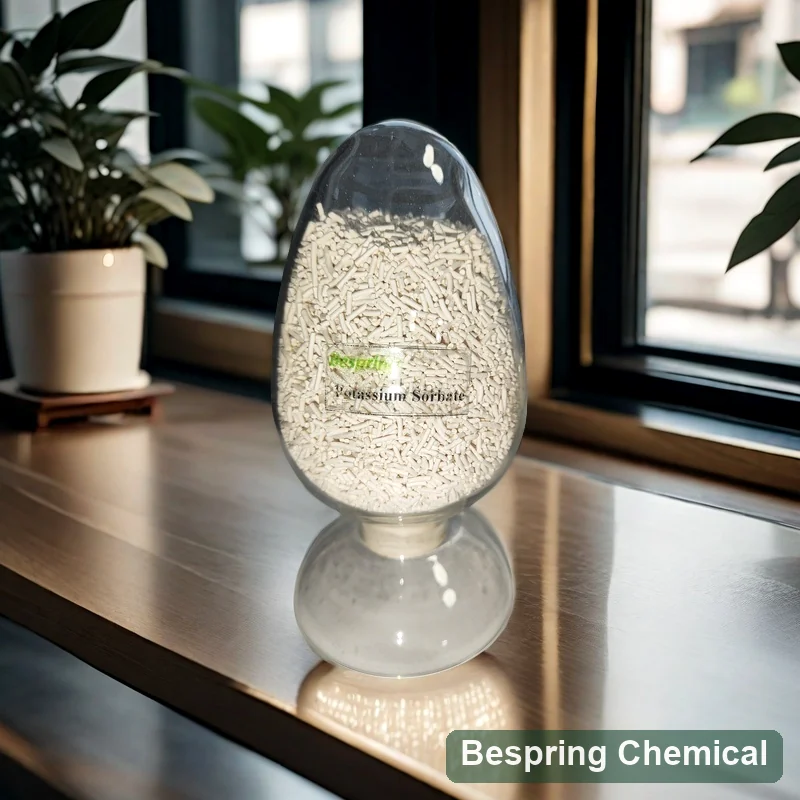
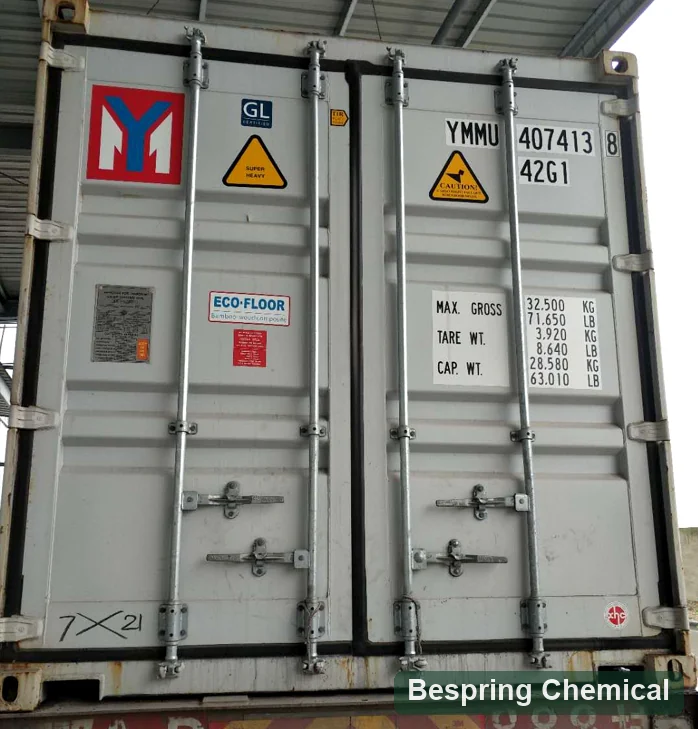

최종 pH 및 산성도
처리 및 기록 산성 후에 최종 평형 pH를 측정하십시오. 성분 해결책의 PH는 완성품 PH가 아닙니다; 산 추가 보다는 오히려 실제적인 공식을 확인하십시오.
식품 보존 · 금형 및 효모 제어 · E202

제품 이미지 · 주문시 급료와 포장을 확인합니다
식품 카테고리, 최종 pH, 대상 생물, 과정, 포장, 수량 및 목적지를 공유합니다.
목표 중심형과 효모 통제
관련 상품25 kg 부대 참고; 팩 유형을 확인하십시오
관련 상품500 kg MOQ · 13 MT/20' FCL
Batch 자격명세와 COA 요청에
제품의 화학적 정체성
칼륨 sorbate, 또한 소르브산 칼륨 소금 또는 칼륨 (E, E) - 2,4-hexadienoate라고도하는 단일 보존 물질입니다. JECFA 칼륨 sorbate monograph CAS 24634-61-5, INS 202, 공식 C를 식별6H7KO2 그리고 공식 무게 150.22 g/mol. 그것은 물, Whereas에서 자유롭게 녹는 입니다 자유로운 sorbic 산 더 적은 수용성입니다.
이 페이지는 과립상 상업적인 참고를 가진 음식 급료 칼륨 sorbate를, 오히려 자유로운 sorbic 산, 입히는 준비 또는 산업 급료 포함합니다. 제안한 입자 모양 및 명세를 확인하십시오; 동일한 화학 ID는 동일한 취급 재산 또는 음식 급료 순수성을 설치하지 않습니다. 가공, 위생, 물 활동, 저장 및 포장과 함께 보전.
보존 시스템 설계
용해 후, 칼륨 소르브산염은 소르브산 평형에 참여합니다. pH는 부유 한 산과 소르브산 이온의 균형을 변경하지만, 효능은 유기 및 식품 조건에 따라 다릅니다. 서로 다른 pH에서 소르빈산을 평가한 일차 연구 테스트 시스템에서 두 가지 형태의 활성을 발견; 그것은 보편적 인 음식 복용량을 정의하지 않습니다 또는 보장 된 세균 제어.
처리 및 기록 산성 후에 최종 평형 pH를 측정하십시오. 성분 해결책의 PH는 완성품 PH가 아닙니다; 산 추가 보다는 오히려 실제적인 공식을 확인하십시오.
손상 효모 및 곰팡이의 우려와 초기 미생물 부하를 정의합니다. 소르브네이트는 보편적 인 병원체 제어로 표시되지 않아야합니다.
문서 열처리, 냉각, 채우고는 및 포스트 과정 노출. 재 오염은 정립 수준 개입을 압도 할 수 있습니다.
실제적인 산소, 온도, 빛, 수송 및 반복 배치의 맞은편에 여는 조건의 밑에 마지막 포장을 시험하십시오.
후보 치료와 비 보존 된 제어 비교, 다음 미생물 저장 조건 하에서 미생물 질, 외관 및 패키지 무결성 모니터링. 성분 사양 및 배치 결과는 품질 증거입니다; 완성 식품 재판은 그 정립에 성능 설치.
신청 Pathways
이 예제는 기술 평가, 보편적 인 법적 권한 또는 복용량을 설명합니다. 각 목적지 시장에 대한 음식 범주, 최대 수준 및 라벨링 규칙을 확인하십시오.
에바루이트: 완전한 용해, 마지막 PH, 녹는 고체, 관련 스포일 효모, 맛, 안개, 충전 공정 및 패키지 조건. 실제 음료의 추가 포인트와 혼합 스탬프를 비교합니다.
에바루이트: PH equilibration, 물 활동, 입자와 단계, 뜨겁 충전물 또는 찬 충전물 과정을 통해 예비적인 배급, 및 여는 노출.
에바루이트: 제품 PH, 표면 versus 대량 보호, 스타터-문화 호환성, 포장 및 감각적인 충격.
에바루이트: 물 활동, PH, 용해 또는 배급, 포스트 빵 오염, 포장 장벽 및 진짜 재고 유효 기간. 효모 기름을 바르는 반죽을 위해, 발효 겸용성을 따로따로 평가하십시오; 채우는 예심은 반죽 suitability를 증명하지 않습니다.
발효는 의도적으로, 원하는 문화와 추가 단계와 호환성을 확인합니다. 완성 된 제품 효모 성장 제어는 정의 된 프로세스와 미생물 검증을 필요로한다; 제어되지 않는 활성 발효를 중지하기 위해 칼륨 소르비트에 의존하지 마십시오.
Source-specific 기술 자료
Bespring의 공급한 상업적인 참고 장의 밑에 가치. 그들은 배치 COA도 아니다 모든 E202 또는 JECFA 필요조건을 가진 적합의 선언. 구매하기 전에 제안되는 급료 명세, 방법 및 보고 기초를 찬성하십시오. 불순 다름은 시장 자격을 위한 특정 주의를 요구합니다.
작은 화면에서 테이블을 수평으로 닦아냅니다. 키보드 사용자는 화살표 키를 사용하여 집중할 수 있습니다.
스와이프하거나 키보드를 사용하여 모든 열을 확인하십시오
| 시험 품목 | 참고 값 | 공급 능력 |
|---|---|---|
| 이름 * | 백색에서 off-white 과립 | 입자 형태와 색깔 기준 확인 |
| 칼륨 sorbate 내용, 건조한 기초 | 99.0–101.0% | 건조 준비, assay 방법 및 uncertainty 확인 |
| 건조에 손실 | ≤ 1.0%; 105°C에서 3 h | 명시된 조건 하에서 대량 손실; 칼 Fischer 물 결과가 아닌 |
| 열 안정성 | 105°C에서 90분 처리 후 변색 없음 | 주문 시각 합격 참고 |
| 산성도, sorbic 산 | ≤ 1.0% | 자주 묻는 질문 |
| 알칼리성, 칼륨 탄산염으로 | ≤ 1.0% | 자주 묻는 질문 |
| 염화물로 염화물 | ≤ 0.018% | 참고 값 |
| Aldehydes, 포름알데히드로 | ≤ 0.1% | 동일한 수치 JECFA 제한; 방법 및보고 기반을 확인 |
| 황산염으로 황산염 | ≤ 0.038% | 참고 값 |
| 제품정보 | ≤ 5 mg/kg | JECFA ≤2 mg/kg 및 개정된 EU ≤0.1 mg/kg 보다는 더 높은 |
| 언어: 영어 | ≤ 3 mg/kg | 개정된 EU 보다는 더 높은 ≤0.1 mg/kg |
| 주요특징 | ≤ 1 mg/kg | 개정된 EU 보다는 더 높은 ≤0.01 mg/kg |
| 중금속, Pb로 | ≤ 10 mg/kg | Pb로 표현되는 총; 분리되는 Pb, 것과 같이, Hg 또는 Zn 결과를 설치하지 않습니다 |
| 유기 휘발성 불순 | 대회 필요조건 | 참고 및 방법의 요청 |
| 잔류 용매 | 대회 필요조건 | 참고 및 방법의 요청 |
상업 함량 범위는 건조 기준 99–101%로 JECFA 건조 기준 98–102%보다 좁습니다. 둘 다 105°C, 3시간의 건조감량 ≤1%와 포름알데히드 환산 알데히드 ≤0.1%를 명시합니다. 상업 납 한도 ≤5 mg/kg는 JECFA ≤2 mg/kg보다 높습니다. 전체 방법은 다음 자료에서 확인하세요: 원래 monograph; 더 좁은 분석실험 한계는 contaminant 적합을 설치하지 않습니다.
규정 (EU) 2024/2597, 별관 II E202의 비소, 납 및 아연을 각각 ≤0.1 mg/kg, 수은을 ≤0.01 mg/kg으로 정하며, 경과 규정에 따라 2025년 4월 27일부터 적용됩니다. 위 상업 규격의 As, Pb 및 Hg 한도는 더 높고, 아연 한도는 기재되어 있지 않습니다. 따라서 이 값으로 해당 EU 기준 적합성을 입증할 수 없습니다. 시장별 규격과 적절한 검출·정량한계의 원소별 배치 결과를 합의하여 요청하고, 승인 전에 최신 통합 규정을 검토하세요.
관련 기사 FAO/WHO JECFA 칼륨 소르븀 monograph 으로 Codex GSFA 보존 목록. Codex 규정은 식품 범주입니다. 미국. 21 CFR 182.3640 GMP에 따라 사용될 때 GRAS로 칼륨 sorbate를 인식하십시오; 이것은 공급자 또는 배치의 FDA 승인이 아닙니다. 정확한 음식 종류, 법적 수준, 계산 기초 및 목적지를 위한 상표 필요조건을 확인하십시오. 킬로그램 몸 무게 당 수락가능한 매일 입구는 음식 추가 비율이 아닙니다.
승인 문서 : 현재 사양 / TDS, SDS, 대표 및 일괄 COA, 방법 및 관련 식품 등급, 원산지, 알레르기 또는 기타 선언을 요청하십시오. 각 인증서의 제품, 사이트 및 유효 범위를 검증합니다. "메인 요구 사항"라는 표준없이, 방법 및 결과는 분석에 충분합니다.
예약문의
표적 생물, PH, 음식 모체, 과정, 가용성, 감각적인 표적 및 허용한 사용 비교하십시오. 이 성분에는 다른 신원 및 정립 역할이 있습니다; 아무도는 자동적인 동위 보충입니다.
자유로운 산 E200에는 더 낮은 물 가용성 및 다른 분자량이 있습니다. dissolution, 추가 점, PH 및 필수 sorbic 산 동등한 것 비교하십시오; 계산과 예심 없이 동등한 질량을 대체하지 마십시오.
다른 산/소금 체계. 표적 생물, PH 응답, Sensory 충격, 마지막 제품에 있는 나트륨 전략 및 시장 규칙을 비교하십시오.
종종 곰팡이 및 베이커리 시스템의 로프 제어에 대해 평가했습니다. 반죽 호환성, 대상 스포일 및 제품 pH를 비교하십시오.
타이밍을 해제하고 초기 상호 작용을 감소시킬 때 고려하십시오; 정확한 캐리어, 활성 내용 및 응용 프로그램 증거가 필요합니다.
공급 능력
표준/버전, 분석실험 기초, 연속적인 한계 및 고객 특정한 필요조건을 지명하십시오.
테이블은 과립을 설명합니다. 국가 어떤 분말 필요조건 및 요구 근원 확인, 입자 크기 배급 및 용해 조건. 혼자 모양은 혼합 성과를 보장하지 않습니다.
pH, 대상 유기물, 공정, 패키지, 저장 조건 및 유통 수명 합격 기준을 정의합니다.
요구 소스 특정 문서 및 참조 25 kg 가방, 500 kg MOQ 및 13 MT/20 발 컨테이너 배열을 확인 합니다. 가방 또는 판지, 라이너, 팔레트 계획, 목적지, Incoterm 및 배달 타이밍을 지정 합니다.
저장 & 취급
구매자 질문
주로 부패성 곰팡이와 효모 제어를 위해 평가합니다. 관련 미생물을 선정하고 최종 식품, 공정, 포장 및 보관 조건을 검증하세요. 원료 순도만으로 모든 세균 제어나 보관기간 보장을 입증할 수는 없습니다.
pH는 용해 후 소르브산과 소르브산 이온 사이의 균형에 영향을줍니다. 재료 용액 pH 또는 범용 pH 차단을 사용하는 것보다 가공 식품을 측정합니다. Organism, 물 활동 및 공정 조건도 시험 결과에 영향을 미칩니다.
통제되지 않는 활성 발효를 중지하지 마십시오. 발효가 원하는 곳, 문화 및 추가 단계를 확인하십시오. 완제품 보존은 정의 된 공정과 미생물 검증을 필요로합니다.
칼륨 소르븀은 E202 소금, 간장 산은 E200 자유로운 산입니다. 소금은 수용성 더이고 다른 분자량이 있습니다. 활동적인 sorbic 산 기초, PH, dissolution, 추가 점 및 시장 규칙을 비교하십시오 오히려 그램을 위해 그(것)들을 대체하기 보다는 오히려.
아니오. ≤5 mg/kg의 상업적인 지도 한계는 JECFA의 ≤2 mg/kg에서 다릅니다. EU 규칙 2024/2597 세트는 더 낮은 것과 같이, Pb와 Hg 한계를 놓고 아연을 추가합니다. 필수 명세 및 검토 성분 별 많은 결과, 방법 및 보고 한계를 찬성하십시오; 총 중금속은 대용품이 아닙니다.
기존 상업 참고 조건은 25 kg 포대, 최소 주문 500 kg 및 20피트 컨테이너당 13톤입니다. 각 제안의 실제 포대·상자, 내피, 팔레트 계획 및 적재 기준을 확인하세요. 사진과 과거 공급자 COA는 최신 거래 조건을 증명하지 않습니다.
식품 표준 및 판, 과립 또는 분말 요구 사항, 주요 불순물, 식품 카테고리, 최종 pH 및 물 활동 알려진, 유기물 및 프로세스, 수량, 포장, 목적지, Incoterm 및 배달 필요. 제안 학년 사양 / TDS, SDS, 대표 및 배치 COA 및 필요한 소스 특정 선언 또는 인증서 요청을 요청하십시오.
내용 갱신일: 2026년 10월 5일 · 기술 참고자료: FAO/WHO JECFA, 미국 eCFR 및 EU E202 개정 규정.
제품 및 물류 참조
영웅 사진은 레테르를 붙이는 판지를 보여줍니다; 아래 이미지는 과립 표본과 선박 콘테이너 외부를 보여줍니다. 이들은 음식 급료 승인, 특정한 선적 또는 적재 능력의 증거가 아닙니다 시각적인 참고입니다.


규격 중심 조달
정확한 자료 및 문서에 필요한 사양, 응용 및 물류 세부 사항을 공유합니다.
당신의 급료 및 목적지 시장을 말하십시오 그래서 우리는 당신의 순서를 위해 어떤 문서가 유효하다는 것을 확인할 수 있습니다.
외부 참조는 일괄 인증서 또는 Bespring 제품 사양이 아닙니다.